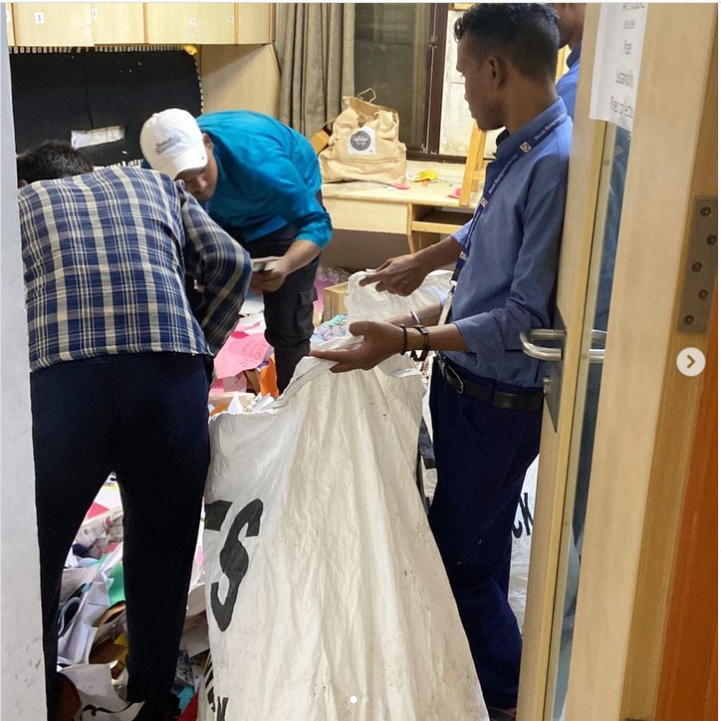

Our Plans and Progress in Detail
We started off by creating our plan of action in order to achieve our goal which was to Recycle Paper. To start with, we took everyone’s ideas and combined them into one big plan. Our Plan-
First, we spread awareness about paper recycling and about our project by visiting different classes in our school/society and creating social media (Instagram) accounts online to connect to the outer world. This included telling people why paper recycling is important and why they should help us recycle paper. We even hosted competitions.
Second, We make boxes to collect waste paper, take that waste paper and find out ways to recycle it. We have made decorative objects by just recycled paper! Our team collaborated with ARCedtech and gave out more than three thousand sheets of paper to be recycled. Lastly, We have also hosted competitions for recycling paper and reward participants/winners with rewards made from 100% recycled paper. To put our journey in one place and spread our experience with many other people online, we created a website in the name of our project Recycle For Good.